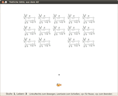
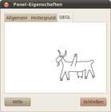
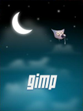
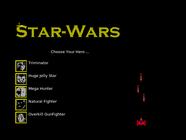
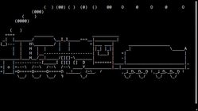
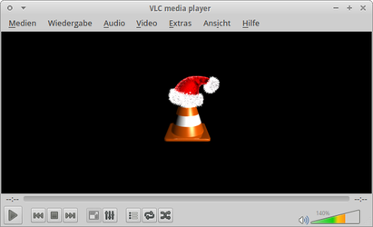

Easter Eggs
Dieser Artikel wurde für die folgenden Ubuntu-Versionen getestet:
Dieser Artikel ist größtenteils für alle Ubuntu-Versionen gültig.
Zum Verständnis dieses Artikels sind folgende Seiten hilfreich:
Dieser Artikel widmet sich Programmen, die von manchen als sinnfrei bezeichnet, von anderen dagegen als Bereicherung des trockenen EDV-Alltags angesehen werden. Natürlich funktioniert Ubuntu auch ohne diese Programme, aber es soll ja auch ein Leben ohne Computer und/oder Internet möglich sein...
Ein Easter Egg ist eine versteckte, undokumentierte und amüsierende Besonderheit von Software. Einige dieser Ostereier sind auch in Ubuntu bzw. einzelnen Programmen versteckt. Daneben gibt es noch einige humorvolle Programme für Freunde der Kommandozeile.
PS: auch im Internet sind Ostereier zu finden.
Easter Eggs¶
GNOME 2¶
| Evolution | von | Wanda |
Wanda¶
Wanda ist ein Fisch, der in einem Aquarium (Applet) im GNOME Panel lebt und Kommentare von sich gibt. Über den Schnellstarter
Alt +
F2 befreit man Wanda durch Eingabe des Befehls free the fish aus dem Aquarium. Versucht man den Fisch mit dem Mauszeiger einzufangen, flüchtet er eilig in eine andere Richtung.
Um Wanda wieder einzufangen, braucht man den folgenden Befehl [1] - sträwrov nebeirhcseg:
llallik lenap-emong
|  |  |
| GEGL | Panel |
GEGL¶
Um das Shoot-'em-up-Spiel "Tödliche GEGL aus dem All" (ein "Space Invaders"-Klon) zu starten, den Schnellstarter
Alt +
F2 drücken und gegls from outer space eingeben.
Panel¶
Einen  Rechtsklick auf das Panel ausführen und "Eigenschaften" wählen. Im neuen Fenster 3x einen Rechtsklick auf einen beliebigen Reiter ausführen, bis der neue Reiter "GEGL" erscheint.
Rechtsklick auf das Panel ausführen und "Eigenschaften" wählen. Im neuen Fenster 3x einen Rechtsklick auf einen beliebigen Reiter ausführen, bis der neue Reiter "GEGL" erscheint.
Unity¶
Leider enthält Unity keine Ostereier. Wer das nicht glauben mag, drückt Alt + F2 und probiert die folgenden Befehle:
free the fishgegls from outer space
Weitere Software¶
Chromium¶
Auch der Browser Chromium enthält Überraschungen. Folgende Adresse bringt es ans Tageslicht:
about:crash
Die folgende Adresse funktioniert nur mit Google Chrome und kommt nicht in die Adresszeile, sondern in das Suchfeld (mit Strg + F öffnen):
about:internets
Firefox¶
Die Mozilla-Entwickler haben zwei Gags aus dem Netscape Navigator übernommen. Durch die Eingabe in die Adresszeile kommen diese zum Vorschein:
about:robotsabout:mozilla
Siehe auch Das Buch Mozilla.
|  |
| GIMP |
GIMP¶
GIMP kennt nicht nur interessante Papierformate: "Datei -> Neu -> Vorlagen -> Toilet Paper (US, 300ppi)", auch Loriot ist den Entwicklern nicht unbekannt: "Datei -> Erstellen -> Muster -> Landkarte erstellen -> Ok" (man beachte die Statuszeile). Selbst die offizielle Webpräsenz gimp.org  enthält ein Gimmick: im Browser aufrufen und
E +
E +
K eingeben.
enthält ein Gimmick: im Browser aufrufen und
E +
E +
K eingeben.
|  |
| OpenOffice.org |
Mumble¶
Bei Mumble kann ein Easter Egg ausgelöst werden, wenn man auf einem beliebigen Server in das Chatfenster des Root-Kanals folgendes eingibt:
Open the pod bay doors, HAL.
OpenOffice.org¶
In früheren OpenOffice.org war das Minispiel "Star Wars" versteckt. Um dieses zu spielen, startete man die Tabellenkalkulation Calc und gab folgendes in jeweils einer Zelle ein:
=game()=game(“StarWars”)
LibreOffice zeigt leider nur ein schnödes #NAME? an (Quelle ).
Terminal¶
Eine kleine Liste von sinnfreien Befehlen bzw. Programmen.
Apt-build¶
Das Paket moo ist definitiv das unter Ubuntu am häufigsten benötigte. Soll eine extra optimierte Version installiert werden, wird das Paket mit apt-build kompiliert:
apt-build moo
Aptitude¶
Soll lieber aptitude verwendet werden? Kein Problem:
aptitude moo aptitude -v moo aptitude -vv moo aptitude -vvv moo aptitude -vvvv moo aptitude -vvvvv moo aptitude -vvvvvv moo
Wer Minesweeper spielen möchte, benutzt die Tastenkombination Strg + T innerhalb des Programms.
Bash¶
Die Shell Bash liefert zwar nicht immer so klare Hinweise, aber in diesem Fall hat sie Recht:
%blow
Cat¶
Wie lautet die Antwort auf die Frage "nach dem Leben, dem Universum und dem ganzen Rest"? Nein, nicht 42, der Befehl cat ermittelt es viel genauer:
cat /dev/urandom
Beenden mit Strg + C .
Cowsay¶
Eine sprechende Kuh (die allerdings ihr Aussehen verändern kann). Ein Beispiel:
cowsay -p -f head-in Autsch
Weitere Informationen sind im Artikel ASCII-Art zu finden. Apropos: Katzenliebhaber sollte sich unbedingt oneko anschauen.
Ddate¶
Viel genauer als der Befehl date ist die folgende Variante (unter Ubuntu 12.04 fehlt das Programm, 988925):
ddate
Mehr Details sind in der Manpage und unter Diskordianismus zu finden.
Emacs¶
Emacs kann wirklich alles - wer das bezweifelt, probiert es einfach aus. Um Tetris oder Snake spielen:
Esc + x, tetris oder snake,
⏎
ls /usr/share/emacs/23.3/lisp/play/
zeigt alle verfügbaren Spiele an.
Dunnet sollte man definitiv in der Konsole spielen.
emacs -batch -l dunnet
Fortune¶
Kein Sprücheklopfer in der Nähe? Kein Problem, denk- oder merkwürdige Sprüche gibt es dank fortune reichlich. Von besonderem Nutzen ist insbesondere das Paket fortunes-bofh-excuses, dass die Ausreden des BOFH enthält.
Hollywood¶
Mission impossible? - gibt es im Terminal nicht. Wer schon immer mal wissen wollte, wie echte Hacks in Szene gesetzt werden, kann das gleichnamige Programm hollywood ausprobieren. Ab Ubuntu 15.04 ist es Bestandteil der offiziellen Paketquellen und kann einfach installiert werden:
hollywood (universe)
 mit apturl
mit apturl
Paketliste zum Kopieren:
sudo apt-get install hollywood
sudo aptitude install hollywood
Ältere Ubuntu-Versionen können ein PPA nutzen. Spannend wird es dann mit der Eingabe des folgenden Befehls:
hollywood
Pypong-Clock¶
Pypong-Clock ist eine grafisch animierte Uhr für die Kommandozeile.
|  |
| Steam Locomotive |
Sl¶
Steam Locomotive ist ein kleines Gagprogramm, das eine Lokomotive anzeigt, sofern man sich beim Befehl ls vertippt hat.
sl (universe)
mit apturl
Paketliste zum Kopieren:
sudo apt-get install sl
sudo aptitude install sl
Beispiel:
sl
Um längere Züge fahren zu lassen, muss man den folgenden Befehl nutzen:
sl -h
Tar¶
Falls man versucht, ein tar.gz-Archiv ohne Eingabedateien zu erstellen, wird das Anlegen von tar "feige" verweigert:
tar czf Archiv.tar.gz
Telnet¶
Obwohl Telnet durch SSH abgelöst worden ist, einer der wenigen Fälle, wo es noch benötigt wird. Setzt eine bestehende Internet-Verbindung voraus:
telnet towel.blinkenlights.nl
Siehe auch Blinkenlights.
Touch¶
Der Befehl touch ist insbesondere in der deutschen Übersetzung vielfältig einsetzbar:
touch /Angela
Allerdings stehen der NSA noch ganz andere Mittel zur Verfügung.
Vim¶
Auch der Editor Vim enthält einige Easter Eggs. Die folgenden Befehle werden jeweils mit Esc eingeleitet und mit ⏎ bestätigt:
:help!:Ni!:help 42
Mit dem unter Ubuntu vorinstallierten vim-tiny funktioniert nur der erste Befehl.
Xeyes¶
Das Programm xeyes wird zwar über die Kommandozeile gestartet, benötigt aber eine laufende grafische Oberfläche:
xeyes
Beenden mit Strg + C
Achtung!
Bitte nicht bei Verfolgungswahn verwenden.
Links¶
|  |
| VLC zur Weihnachtszeit |
Easter Eggs in Ubuntu Linux
 - Blogbeitrag 04/2010
- Blogbeitrag 04/2010Forendiskussionen zum Thema:
Internet Easter Eggs¶
unixux
- UNIX HATERS Release 2.0Hackertype
- Programmieren für LaienGute Frage...
- Kamelopedia
- Erstellt mit Inyoka
-
 2004 – 2017 ubuntuusers.de • Einige Rechte vorbehalten
2004 – 2017 ubuntuusers.de • Einige Rechte vorbehalten
Lizenz • Kontakt • Datenschutz • Impressum • Serverstatus -
Serverhousing gespendet von